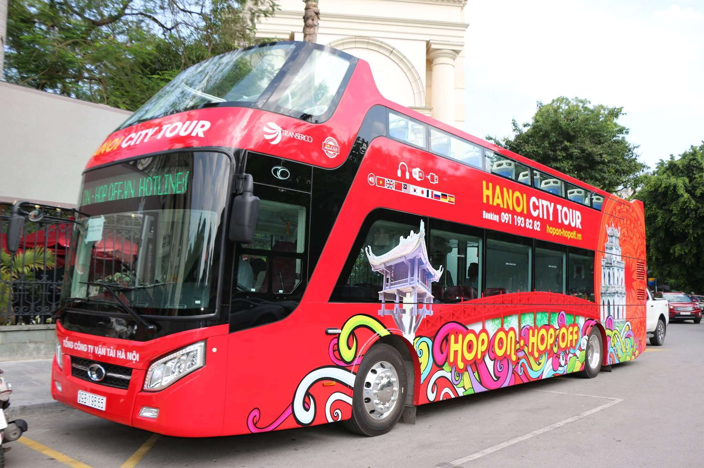

Tuyến Hanoi City Tour: Bờ Hồ - Bờ Hồ
Đơn vị chủ quản: Xí nghiệp xe buýt Yên Viên
Thời gian hoạt động: 9h00 - 17h30
Tần suất: 30 phút/chuyến
Số xe vận doanh: 3/3 xe
| Giá vé | Thời gian có hiệu lực |
|---|---|
| 196.000 đồng/hành khách | 2h, không dừng |
| 300.000 đồng/hành khách | 4h |
| 450.000 đồng/hành khách | 24h |
| 650.000 đồng/hành khách | 48h |
Lộ trình: Quảng trường Đông Kinh Nghĩa Thục, Nhà thờ Thánh Giuse, Cột Cờ Hà Nội, Lăng Chủ tịch Hồ Chí Minh, Đền Quán Thánh, Chùa Trấn Quốc, Nhà thờ Cửa Bắc, Hoàng thành Thăng Long, Văn Miếu Quốc Tử Giám, Nhà tù Hoả Lò, Bảo tàng Phụ nữ Việt Nam, Nhà hát lớn Hà Nội, Bưu điện Hà Nội.

Danh sách điểm dừng:
| STT | Thông tin điểm dừng | Âm thanh đọc điểm dừng | Điểm tham quan tại điểm dừng |
|---|---|---|---|
| 1 | Điểm đầu Quảng trường Đông Kinh Nghĩa Thục (Thứ 2 - Thứ 6) / Nhà hát lớn Hà Nội (Thứ 7 - Chủ Nhật) |  |
Hồ Hoàn Kiếm - Khu phố cổ Hà Nội |
| 2 | Số 4B Tràng Thi | |
Nhà Thờ Chính Toà Thánh Giesu |
| 3 | Số 28A Điện Biên Phủ | |
Cột Cờ Hà Nội - Bảo tàng lịch sử quân sự Việt Nam |
| 4 | Số 49 Điện Biên Phủ | |
Lăng Chủ Tịch - Bảo tàng Hồ Chí Minh - Chùa Một Cột - Tòa nhà Quốc Hội |
| 5 | Điểm giao nhau đường Quán Thánh và Thanh Niên | |
Hồ Tây - Hồ Trúc Bạch - Đền Quán Thánh |
| 6 | Đường Thanh Niên | |
Hồ Tây - Chùa Trấn Quốc |
| 7 | Số 6 Hoàng Diệu | |
Nhà thờ Cửa Bắc |
| 8 | Đối diện Hoàng Thành Thăng Long | |
Hoàng Thành Thăng Long |
| 9 | Số 58 Quốc Tử Giám | |
Văn Miếu - Quốc Tử Giám |
| 10 | Đối diện Số 52A Lý Thường Kiệt | |
Nhà Tù Hoả Lò - Chùa Quán Sứ |
| 11 | Số 36 Lý Thường Kiệt | |
Bảo tàng Phụ Nữ Việt Nam |
| 12 | Số 1 Tràng Tiền | |
Nhà hát lớn Hà Nội |
| 13 | Số 75 Đinh Tiên Hoàng | |
Bưu điện Thành phố Hà Nội |
| 14 | Điểm cuối Quảng trường Đông Kinh Nghĩa Thục (Thứ 2 - Thứ 6) / Nhà hát lớn Hà Nội (Thứ 7 - Chủ Nhật) | |
Hồ Hoàn Kiếm - Khu phố cổ Hà Nội |